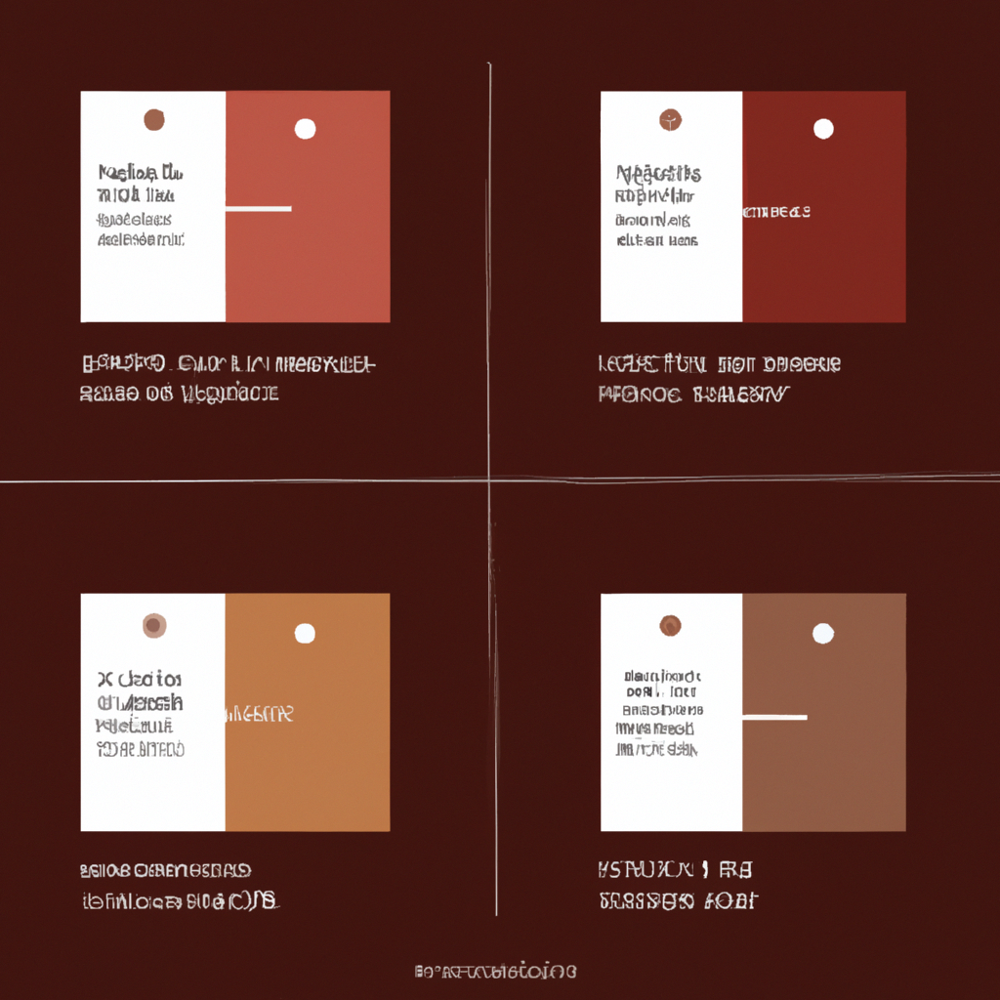

The 30-60-90 Rule in Sales: Why Onboarding Plans Fail After Day 91

Your new rep finished the 30-60-90 plan. They know the product. They've shadowed top performers. They've run their first demos.
On day 91, the onboarding plan ends. The structured check-ins stop. The daily guidance disappears.
That's when the drift begins.
What Is the 30-60-90 Rule in Sales?
The 30-60-90 day sales plan is a three-month roadmap that breaks onboarding into three clear phases: learn, execute, and prove results. It defines specific goals, actions, and metrics for days 1-30, 31-60, and 61-90.
Days 1-30: Learn. Master product knowledge, shadow top reps, map your territory, and build relationships with your manager and internal teams. This is foundational training—absorb the methodology, understand the buyer, learn the pitch.
Days 31-60: Execute. Begin prospecting, run presentations, build your pipeline, and refine your pitch based on real conversations. The training wheels come off, but the structure remains.
Days 61-90: Prove Results. Execute your strategy fully, hit your first quota targets, and deliver measurable results that prove your impact on revenue.
The framework is sound. The logic is clear. Learn, execute, prove.
But here's the problem: What happens on day 91?
The Onboarding Paradox: Reps Are Ramped But Not Productive
The average sales rep ramp time in 2026 is 5.7 months—nearly half a year before your new hire reaches baseline productivity. That number is up 32% since 2020.
But HubSpot reports that new reps take an average of 3.2 months to fully ramp, depending on methodology and company size.
So which is it? Three months or six?
The answer: It depends on what you're measuring. Three months to complete onboarding. Six months to actually perform consistently.
That gap—the three months between "ramped" and "productive"—is where methodology drift happens.
What Happens After the 30-60-90 Plan Ends
Here's what changes on day 91:
The daily check-ins stop. The weekly pipeline reviews become biweekly. The manager who was watching every call is now managing ten other reps.
The rep is "ramped," so they're on their own.
And that's when the methodology starts slipping.
They skip discovery because the prospect is "ready to buy." They pitch product before qualifying budget because "this one's different." They move demos forward without mapping the decision process because "we're building momentum."
Not because they forgot the training. But because pressure reveals habit, not intention.
Around 70% of new hires decide whether a job is right for them within the first month, with 29% deciding within just the first week. The onboarding experience shapes their entire trajectory.
But if that trajectory isn't reinforced after day 90, the methodology they learned in week one disappears by month six.
The Methodology Scorecard Nobody Sees
Imagine this: A rep finishes their 90-day plan. On day 95, they run their first solo discovery call without a manager listening.
Two weeks later, their manager reviews the call. The feedback: "Good energy, but you skipped budget qualification and moved straight to demo. Let's tighten up discovery next time."
The rep nods. Agrees. Commits to improvement.
Next call, same pattern. Discovery skipped. Methodology abandoned. Pressure won.
Now imagine a different scenario: Same rep, same call. But this time, within hours, they receive feedback:
"Discovery Call Score: 55%. Pain identified but not quantified. Budget conversation skipped entirely. Decision process unclear—moved to demo at 12:43 without mapping stakeholders."
The rep sees exactly where they drifted. Not vague advice. Specific gaps with timestamps.
Next call, they adjust. Budget gets qualified. Stakeholder map completed before demo. Score improves to 78%.
That's the difference between onboarding that sticks and onboarding that fades.
Why 30-60-90 Plans Work—Until They Don't
Research shows that reps with structured onboarding plans are 79% more likely to hit their targets. Additionally, companies with effective onboarding programs see 10% higher sales growth rates and 14% better achievement of sales objectives.
The structure works. The problem is what happens when the structure ends.
During days 1-90, reps receive:
Daily feedback. Weekly pipeline reviews. Manager shadowing on key calls. Constant course correction.
After day 90, they receive:
Monthly one-on-ones. Quarterly performance reviews. Feedback that arrives too late to change behavior.
The training was effective. The reinforcement disappeared.
And without reinforcement, methodology drifts back to old habits. Discovery gets skipped. Budget conversations are postponed. Stakeholder mapping is "assumed."
The 30-60-90 plan taught them how to sell. Day 91 taught them that nobody's watching.
The Real Cost of Onboarding Without Reinforcement
Ramp time has increased 32% since 2020. But it's not because reps are learning slower. It's because the post-onboarding environment doesn't reinforce what they learned.
Consider the numbers:
Effective onboarding programs can improve employee retention by 52%, productivity by 60%, and overall job satisfaction by 53%.
Organizations with a strong onboarding process see a productivity boost exceeding 70%. Companies that retain top talent through effective onboarding see a 60% increase in revenue per full-time team member.
For sales roles specifically, there is 87% retention when implementing a 60-day ramp with daily micro-check-ins, a 2-week intake sprint, and a mentor-based 1:1.
The onboarding works. But only if the reinforcement continues.
When it doesn't, you get:
Longer ramp times. Lower quota attainment. Higher turnover. And a growing gap between what reps know and what reps do.
What Sales Leaders Should Do This Week
If your 30-60-90 plan is working but your ramp times are still climbing, start here:
1. Audit calls from reps at day 100-120. Don't review their first 90 days—that's when they're still following the plan. Listen to calls two months after onboarding ends. That's when you'll see where methodology drifts.
2. Ask your recently ramped reps: "What changed after day 90?" Most will say "less feedback" or "fewer check-ins." The insight is clear: The structure ended when they needed it most.
3. Test continuous methodology scoring for one ramped rep. Pick someone who finished onboarding in the last 60 days. Score their next 5 calls against your methodology (Sandler, MEDDIC, whatever framework you use). Give same-day feedback with specific timestamps. Watch what changes.
Then ask: Do you keep hoping methodology sticks, or do you start measuring it?
What Sales Leaders Ask
"Our managers already give feedback. How is this different?"
Manager feedback is valuable but it's delayed and general. "Ask better discovery questions" is advice. "You skipped budget qualification at 8:32 on the Johnson call" is measurable feedback with a timestamp. Reps adjust when feedback is specific and immediate.
"Won't scoring every call overwhelm new reps?"
The opposite happens. New reps want to know if they're doing it right. Delayed feedback creates anxiety ("Did I mess that up?"). Same-day scores provide clarity. They know exactly where they stand and what to improve next call.
"How long until we see results?"
Most teams see methodology adherence improve within 2-3 weeks of continuous scoring. Reps adjust faster when they receive immediate, concrete feedback instead of waiting for weekly or monthly reviews. The feedback loop shrinks from weeks to hours.
The Path Forward: Onboarding That Never Ends
The 30-60-90 plan isn't broken. It's incomplete.
It gets reps started. It teaches methodology. It builds foundational skills.
But it doesn't prevent drift after day 91.
What if, instead of ending onboarding on day 90, you extended methodology reinforcement indefinitely?
Not more training. Not longer onboarding. But continuous reinforcement through call-by-call scoring.
Every discovery call scored. Every demo reviewed. Every methodology gap identified—before it becomes a habit.
The onboarding plan gets them to baseline. Continuous reinforcement gets them to quota.
That's the difference between reps who ramp in 90 days and reps who perform in 90 days.
Track Methodology Adherence Beyond Day 90
One Click Coaching scores every call against your sales framework (Sandler, MEDDIC, Challenger). See exactly where new reps follow methodology—and where they drift after onboarding ends. Same-day feedback means habits form correctly from day 1.
See How Continuous Scoring Works →Sources
- 30-60-90 Day Sales Plan: How to Win in Field Sales - SPOTIO
- How to Build a 30-60-90 Day Sales Plan That Works - Pipedrive
- Sales Rep Ramp Time in 2026: How Long Before Your New Hire Actually Sells? - Alba Talent
- Sales Rep Ramp-Up Times Statistics - Careertrainer.ai
- 36+ Onboarding statistics to know in 2026 - HiBob
- These 50+ Employee Onboarding Statistics Impacting Hiring [2026] - Yomly